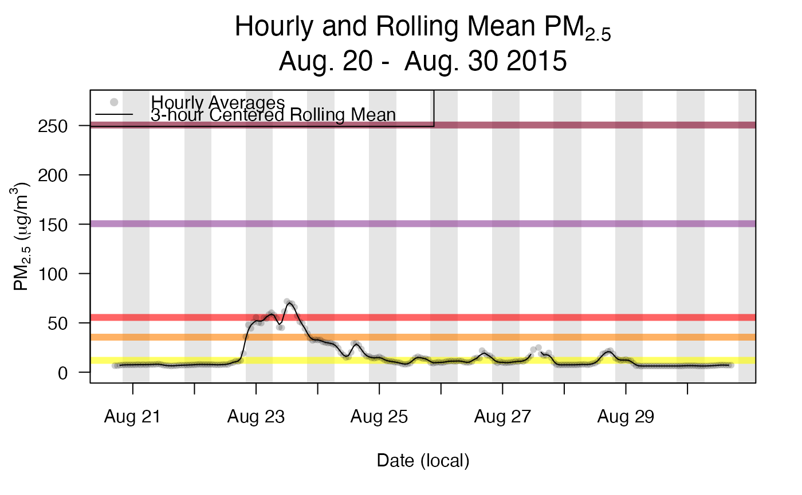

Creates a plot of individual (e.g. hourly) and rolling mean PM2.5 values for a specific monitor.
monitor_rollingMeanPlot(ws_monitor, monitorID = NULL, width = 3, align = "center", data.thresh = 75, tlim = NULL, ylim = NULL, localTime = TRUE, shadedNight = FALSE, aqiLines = TRUE, gridHorizontal = FALSE, grid24hr = FALSE, grid3hr = FALSE, showLegend = TRUE)
| ws_monitor | ws_monitor object |
|---|---|
| monitorID | Monitor ID for a specific monitor in the ws_monitor object (optional if only one monitor in the ws_monitor object). |
| width | Number of periods to average (e.g. for hourly data, |
| align | Alignment of averaging window relative to point being
calculated; one of |
| data.thresh | Minimum number of valid observations required as a percent
of |
| tlim | Optional vector with start and end times (integer or character representing YYYYMMDD[HH]). |
| ylim | y limits for the plot. |
| localTime | Logical specifying whether |
| shadedNight | Add nighttime shading. |
| aqiLines | Horizontal lines indicating AQI levels. |
| gridHorizontal | Add dashed horizontal grid lines. |
| grid24hr | Add dashed grid lines at day boundaries. |
| grid3hr | Add dashed grid lines every 3 hours. |
| showLegend | Include legend in top left. |
align = "left": Forward roll, using hour of interest and the
(width-1) subsequent hours (e.g. 3-hr left-aligned roll for Hr 5
will consist of average of Hrs 5, 6 and 7)
align = "right": Backwards roll, using hour of interest and
the (width-1) prior hours (e.g. 3-hr right-aligned roll for Hr 5
will consist of average of Hrs 3, 4 and 5)
align = "center" for odd width: Average of hour of
interest and (width-1)/2 on either side (e.g. 3-hr center-aligned
roll for Hr 5 will consist of average of Hrs 4, 5 and 6)
align = "center" for even width: Average of hour of
interest and (width/2)-1 hours prior and width/2 hours
after (e.g. 4-hr center-aligned roll for Hr 5 will consist of average of
Hrs 4, 5, 6 and 7)
This function attempts to provide a 'publication ready' rolling mean plot.
N_M <- Northwest_Megafires Roseburg <- monitor_subset(N_M, tlim = c(20150821, 20150831), monitorIDs = c("410190002_01")) monitor_rollingMeanPlot(Roseburg, shadedNight = TRUE)